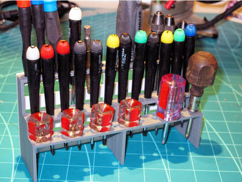
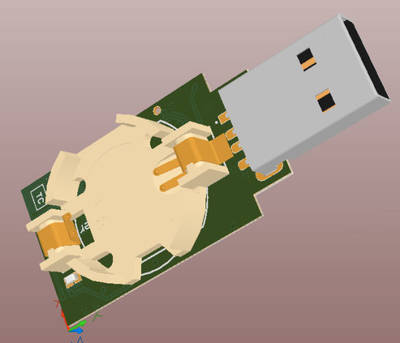

2017-01-12 - Nº 89

Editorial
Esta é a Newsletter Nº 89 que se apresenta com o mesmo formato que as anteriores. Se gostar da Newsletter partilhe-a!
Todas as Newsletters encontram-se indexadas no link.
Esta Newsletter tem os seguintes tópicos:
Hoje é o aniversário de James Fergason. Este inventor Norte-Americano nascido em 1934 ficou conhecido pelo seu trabalho no melhoramento do LCD (Ecran de Cristais Liquidos). A companhia detida por este inventor produziu o primeiro relógio de pulso usando este tipo de ecran. Faz também hoje anos que nasceu Jan Baptist van Helmont. Este quimico belga, nasceu em 1580 e ficou conhecido por ter introduzido no vocabulário dos cientistas a palavra "gás".
Esta semana a Alphabet - empresa mãe da Google - anunciou que vai abandonar o prjeto de Internet através do drone Titan. Custos de exploração e rentabilidade da solução estarão na origem da decisão. A Intel, BMW e Mobileye irão ter veiculo de condução autonoma no segundo semestre do ano de 2017. Esta revelação foi feita na CES 2017 e a BMW afirmou que com tecnologia das outras duas companhias vai usar nos seus veiculos da serie 7. A Renualt anunciou que a plataforma de hardware do seu carro electrico compacto - o Twizy EV - vai ser disponibilizada em open source. Isto irá permitir que quem quiser iniciar ou construir o seu veiculo electrico poderá baseá-lo nesta plataforma.
Na Newsletter desta semana apresentamos diversos projetos de maker assim como alguns modelos 3D que poderão ser úteis.
 João Alves ([email protected])
João Alves ([email protected])
O conteúdo da Newsletter encontra-se sob a licença  Creative Commons Attribution-NonCommercial-ShareAlike 4.0 International License.
Creative Commons Attribution-NonCommercial-ShareAlike 4.0 International License.
Novidades da Semana ^
Alphabet Says It Shut Down Titan Drone Internet Project
"In 2014, Google and Facebook Inc. vied to acquire Titan Aerospace, a maker of high-altitude, solar-powered drones. Google won the bidding, so Facebook purchased its own company, which was building a huge glider called Aquila. The idea was to beam internet access from the sky to get more people logging on from remote places to access information and probably use both companies’ web services. That soaring vision has come down to Earth with a bump. On Wednesday, a spokeswoman from Google parent Alphabet Inc.’s X research lab said it had shut down Titan. This happened in early 2016, she said, although confirmation didn’t come until earlier today, when technology blog 9to5Google reported the move. The team from Titan was brought into X in late 2015, and the research lab ended its exploration of high-altitude drones for internet access shortly after, the X spokeswoman said in a statement." [...]
BMW Group, Intel and Mobileye Will Have Autonomous Test Vehicles on the Roads by the Second Half of 2017
"BMW Group, Intel and Mobileye today announced that a fleet of approximately 40 autonomous BMW vehicles will be on the roads by the second half of 2017, demonstrating the significant advancements made by the three companies towards fully autonomous driving. Revealing this at a podium discussion held during a joint press conference at CES, the companies further explained that the BMW 7 Series will employ cutting-edge Intel and Mobileye technologies during global trials starting in the U.S. and Europe. This news follows the partnership that was announced between the BMW Group, Intel and Mobileye in July of last year. The companies have since developed a scalable architecture that can be adopted by other automotive developers and carmakers to pursue state of the art designs and create differentiated brands. The offerings scale from individual key integrated modules to a complete end-to-end solution providing a wide range of differentiated consumer experiences." [...]
Renault will release its Twizy EV hardware system as an opensource platform
"Renault has developed an open-source automotive platform for a compact and lightweight electric vehicle, based on its existing Twizy EV, which could enable those wanting to build their own electric vehicle company to jumpstart the process. In partnership with OSVehicle and ARM, Groupe Renault will release its POM platform to the world as the "first open-source mass market vehicle platform," which will allow third parties to both copy and modify the existing hardware and software to create their own version of a totally customizable EV. Although OSVehicle already has an open-source vehicle platform available - the TABBY EVO - which is the basis of the Busy Bee (the first open-source road-legal city car built on it), this new partnership marks the first time a big automaker is open-sourcing its EV platform, and could be the start of a whole new breed of electric vehicle innovation. A platform isn't a finished vehicle, and isn't road-legal on its own, but is rather the core systems around which a complete vehicle is built." [...]
Outras Notícias
- Honda Riding Assist motorcycle Wins Three Awards at CES 2017
- First 64-Bit and Enterprise OS Comes to Raspberry Pi 3
- LG Smart instaview refrigerator features voice control, webos and remote viewing capabilities
Ciência e Tecnologia ^
Researchers design one of the strongest, lightest materials known
"A team of researchers at MIT has designed one of the strongest lightweight materials known, by compressing and fusing flakes of graphene, a two-dimensional form of carbon. The new material, a sponge-like configuration with a density of just 5 percent, can have a strength 10 times that of steel. In its two-dimensional form, graphene is thought to be the strongest of all known materials. But researchers until now have had a hard time translating that two-dimensional strength into useful three-dimensional materials. The new findings show that the crucial aspect of the new 3-D forms has more to do with their unusual geometrical configuration than with the material itself, which suggests that similar strong, lightweight materials could be made from a variety of materials by creating similar geometric features." [...]
Nanowire 'inks' enable paper-based printable electronics
"By suspending tiny metal nanoparticles in liquids, Duke University scientists are brewing up conductive ink-jet printer “inks” to print inexpensive, customizable circuit patterns on just about any surface. Printed electronics, which are already being used on a wide scale in devices such as the anti-theft radio frequency identification (RFID) tags you might find on the back of new DVDs, currently have one major drawback: for the circuits to work, they first have to be heated to melt all the nanoparticles together into a single conductive wire, making it impossible to print circuits on inexpensive plastics or paper. A new study by Duke researchers shows that tweaking the shape of the nanoparticles in the ink might just eliminate the need for heat. By comparing the conductivity of films made from different shapes of silver nanostructures, the researchers found that electrons zip through films made of silver nanowires much easier than films made from other shapes, like nanospheres or microflakes. In fact, electrons flowed so easily through the nanowire films that they could function in printed circuits without the need to melt them all together." [...]
Enhance! RAISR Sharp Images with Machine Learning
"Everyday the web is used to share and store millions of pictures, enabling one to explore the world, research new topics of interest, or even share a vacation with friends and family. However, many of these images are either limited by the resolution of the device used to take the picture, or purposely degraded in order to accommodate the constraints of cell phones, tablets, or the networks to which they are connected. With the ubiquity of high-resolution displays for home and mobile devices, the demand for high-quality versions of low-resolution images, quickly viewable and shareable from a wide variety of devices, has never been greater. With “RAISR: Rapid and Accurate Image Super-Resolution”, we introduce a technique that incorporates machine learning in order to produce high-quality versions of low-resolution images. RAISR produces results that are comparable to or better than the currently available super-resolution methods, and does so roughly 10 to 100 times faster, allowing it to be run on a typical mobile device in real-time. Furthermore, our technique is able to avoid recreating the aliasing artifacts that may exist in the lower resolution image. " [...]
The moon is older than scientists thought, UCLA-led research team reports
"A UCLA-led research team reports that the moon is at least 4.51 billion years old, or 40 million to 140 million years older than scientists previously thought. The findings — based on an analysis of minerals from the moon called zircons that were brought back to Earth by the Apollo 14 mission in 1971 — are published Jan. 11 in the journal Science Advances. The moon’s age has been a hotly debated topic, even though scientists have tried to settle the question over many years and using a wide range of scientific techniques." [...]
New candidate for 'missing element' in Earth's core
"Japanese scientists believe they have established the identity of a "missing element" within the Earth's core. They have been searching for the element for decades, believing it makes up a significant proportion of our planet's centre, after iron and nickel. Now by recreating the high temperatures and pressures found in the deep interior, experiments suggest the most likely candidate is silicon. The discovery could help us to better understand how our world formed." [...]
Modelos 3D ^
Com a disponibilidade de ferramentas que permitem dar azo a nossa imaginação na criação de peças 3D e espaços como o thingiverse para as publicar, esta rubrica apresenta alguns modelos selecionados que poderão ser úteis.
Chess Complete SCAD
"This is a 100% OpenSCAD rendered chess set. No importing of any other files necessary. The Knight was though most difficult to design, but I like how it came out. Note that OpenSCAD 2016+ is needed for some advanced sweeping for the Knight's mohawk and the Rooks top bricks. It should gracefully degrade if you do not have a version of OpenSCAD that supports angled rotate_extrude." [...]

Tool Shelf for the Bench (parametric)
"Need a organizing shelf for all those loose screwdrivers, paint brushes and the like for your bench. Here it is! This design uses Customizer to adjust to your specific needs for each of the three shelves. Measure diameter of your screwdriver to the just above the grip and shank. Add that to the shelf hole diameter. Measure from that point on the handle to the end of the blade to add 5mm and this will be the height of that shelf. Repeat for the next two shelves. Let me know what you think or if you run into issues." [...]
Projetos Maker ^
Diversos Projetos interessantes.
Robot Movement by Hand Gesture
"Program ESP8266 with Arduino IDE for convenience. ADXL345 accelerometer communicates using I2C protocol. I've used ESP8266-01, in later versions of ESP we have dedicated pins for I2C bus to communicate with ADXL345. But in ESP8266-01 we can use any of the 4 GPIO pins for I2C, here I've used GPIO 0 and GPIO 2, since GPIO 1 and GPIO 3 (Tx & Rx) will be used for debugging." [...]
ThiDom Home automation
"This project uses Arduino, Raspberry and Attiny, it allows you to control nd monitor your home (AC outlet, shutters, heater, light, opening detector, temperature ...). The raspberry is the web server allowing control all arduino These can be controlled from any web browser around the world. You can use your cell phone, tablet, or computer to turn on or off the outputs. Arduino Network is a Mesh Network." [...]
4-digit RTC Clock
"I have got a DS1302 Real Time Clock Module with Battery Backup, and I was eager to making a digital clock. As I also had a 7-segment 4-digit display, I was looking for the best way to make that clock. But I was always reluctant to use this type of display, because of the amount of wires it requires. Then, "digital tube" 4-wire 4-digit display came across, and I knew that was the solution I was searching for. Now I had all the pieces of my little system." [...]
Security System | SW-420 | Arduino | GSM
"Howdy. Today I came up with the another security system method that detects vibrations and sends an alert message and can even make calls. Check out the first of my security systems. Alright, let's do this. Before beginning the work, you might need to configure your GSM." [...]
Arduino Altair 8800 simulator
"For a long time I have thought it would be cool to have an Altair 8800 computer to play around with. But working vintage Altairs are rare and therefore expensive, easily costing $1500-$2500 if available at all. There are some other options, such as altairclone.com but that still costs $600 which for me is too much to spend on a computer that - while very cool - will be of limited use. At some point I was looking at the specs for the Arduino Mega 2560 and started wondering whether it would have enough I/O pins to just hook up the LEDs and switches from the Altair front panel and write my own emulator software. Turns out the Arduino Mega has exactly the right number of I/O pins. So I just had to make my own Altair clone." [...]
Electronic Decision Maker - 4046
"In this instructable I will show you how I made an electronic "decision maker" with the 4046 - phase-locked loop. What does that mean you ask? Well it's basically a coin flipper. You press the button to start the oscillation and then wait until one of the LEDs stabilizes. If you need to decide between more than two states then you might be interested in electronic dice that I made in the previous instructable : Electronic dice with slowdown" [...]
The Morse Translator with Arduino
"What it does: It translates your morse code into English words! With this Morse Translator you can improve your morsing skills. Imagen,if the zombie apocalypse will happen, this will be the only way to communicate. Start practicing now!! ... or just have fun morsing ;) About the morse code: Characters in morse code consist of a series of dots (short beeps) and dashes (long beeps). The duration of a dot is the basic unit of time. To begin with, the variable is set to a value of 1000 ms, which is good if you're just starting to learn morse code. The following rules hold: The duration of a dash is three times the duration of a dot (default 1000ms) The gap between dashes and dots within a character is the duration of a dot.The gap between characters is three times the duration of a dot (i.e., the duration of a dash)The gap between words is seven times the duration of a dot." [...]
Ardu McDuino: Bagpipe Playing Robot (chanter)
"Bagpipe chanter playing robot. A chanter is a low cost device allowing you to learn to play the bagpipes. It resembles the important part of bagpipes, i.e. the part that plays the main tune with a reed and finger holes, you just blow down it for now until I can make a suitable air pump. The brain is an Arduino Mega 2560. The encoding of the music within the Arduino code is a custom system I have come up with (more later). I particularly wanted it to have "hands" with moving fingers which played the notes and so I have used an off the shelf open source design of 3D printed prosthetic hand called a Raptor-reloaded, from the Enable project for 3D printing prosthetic hands for matched recipients in developing countries: www.enablingthefuture.org The finger tips are lifted off the holes of a bagpipe chanter with 12V DC solenoids. The solenoids are controlled by the Arduino board via opto-isolated MOSFETS which can be bought on low cost boards fully assembled in groups of four." [...]

Six Ultrasonic Sensors !!! | Raspberry Pi Robot
"Add upto six ultrasonic sensors to your robot" [...]
FMBerry
"FMBerry is a piece of software that allows you to transmit FM radio with your Raspberry Pi. It uses the Sony-Ericsson MMR-70 transmitter, which was originally intended for use with Sonys Walkman cellphones from early 2000s. You can get these for really cheap from Amazon." [...]
Build and Drive This Adorable FPV Balance Bot
"When you’re getting started in robotics, building a self-balancing bot is a rite of passage. Mine is called EddiePlus. He’s rechargeable, Wi-Fi-enabled, and remote controlled, and he’s an open source project, so anyone can build him in a weekend or two. He can even be navigated completely out of sight, for 1 hour of drive time, via an FPV (first-person view) camera. I built my first Eddie just for fun and as an excuse to put my Intel Edison Compute Module to good use. As a customer eagerly awaiting the Edison release, I was excited to have a project planned before my order arrived. The Edison’s low power draw and tiny footprint make it a great fit for small, battery-powered projects that need a lot of processing power. I was also excited to try SparkFun’s Edison Blocks — modular boards that stack onto the Edison to provide functions like motor control and power management." [...]
IoT made simple: Monitoring temperature anywhere
"It's amazing how quickly you can put together an IoT protect using a NodeMCU and a Blynk app. On this tutorial we will learn about a great, reliable and easy to use digital temperature sensor, the DS18B20. Also as shown at above block diagram, the collected data from the sensor will be upload to internet with a help of a NodeMCU ESP8266-E and monitored on a Smart device using the Blynk app." [...]
ESP8266 PlaneSpotter Color
"After many hours of work I’m very happy to finally publish all the sources for the ESP8266 PlaneSpotter project. It is not yet really in a V1.0.0 state but I’m sure with the help of the community it will quickly get better. While this post is more a “making-of” you can find build instructions on Github: https://github.com/squix78/esp8266-plane-spotter-color . A few months back I had already built and published a PlaneSpotter project for the tiny OLED screens. It was quite useful but could only display text information about the nearest plane. How much cooler would it be to have a tiny and affordable device displaying a map with airplanes on it, just like the apps you have on your smart phone? The idea kept coming back to me but one important puzzle piece was missing: the TFT library could only display raw bitmap files (BMP) and I didn’t know of any mapping service which would let you download bmp images. Of course, I could have built a web service which would have converted JPEGs and PNGs to BMPs on the fly but that wasn’t really my goal. So I was stuck with the idea until I recently found Frederic Plante’s fork of the JPEGDecoder library with adaptations for the ESP8266. This suddenly changed the game and I started working on the PlaneSpotter Color project." [...]
Acceleration Measuring Helmet
"Recently, there's been a lot of discussion in the sports community about the effects of concussions that can be commonplace during an athletic season. Research is still being done to find a link between the development of CTE, chronic traumatic encephalopathy, later in an athlete's life due to previous concussions. This device is an accelerometer that's been programmed to find the change in acceleration and stores data in a microSD card. Data is collected every tenth of a second and the information can be used for a sports medicine physician to determine whether an athlete is at risk of a concussion. There is no definite amount of change in acceleration that will result in a concussion as every person is different but the device can provide more insight for a medical professional." [...]
Home made CNC Router
"This is the toughest project for me among all of my previous builds and also consumes my lot of money and time, but the end result brings a huge smile on my face when I saw the complete build. I have never made any CNC machine ever and even didn’t make any project regarding electronics. When I saw the end result I have no words to express that moment. I think a person who dreamed to have a CNC made by himself, taught by himself can understand my feelings. The whole build journey of my CNC have many ups and downs. I have a little bit knowledge about CNC machine like how they work, what are the things needed to make a CNC machine, what type of parts used to make a CNC machine. Before starting this project, I know that this is very difficult project for me but even than I took a risk to build my own CNC machine because its my dream and I want to fulfill it at any cost. Before started building this machine I research a lot at you tube, watch many CNC builds videos and all of them are of different designs and dimensions. So rather than coping them I decided to make my own design which makes me comfortable during my build and because of that I used wood rather than metal to make my CNC.I know it have a disadvantage that it absorb moisture and deform time to time but it’s easy to work so I Decided to go with it because I have to paint it in my own color theme which will definitely prevent moisture absorption." [...]
Lipo-battery Powered Arduino
"I've always wanted to use cheap lipo battery used in drone and RC car to power my arduino, but since I didn't found any tutorials about it, I thought this was probably a bad idea. Anyway, that didn't stopped me trying it, but since my knowledge of batteries is limited, please drop a comment if i'm doing something wrong. Obviously, this will probably void the warranties of your battery since this isn't how it is supposed to be used." [...]
Build a DIY garden you can bring on the road
"There’s nothing quite like putting down roots and tending a garden. But what happens if you don’t have a backyard? Or you’re suddenly uprooted? Or you decide to go on a road trip and can’t get anyone to watch your plants? Just whip up a portable container garden. Sure, it’s not the same thing as a plot of land, but it’s easy to build and you can move it on demand. In this design, created by researchers at the University of Maryland Extension, a water reservoir helps keep the plants healthy and hydrated—even if you forget to water them while you’re traveling." [...]
WIoT-2 Weather Station - Nextion TFT with ESP8266
"This is a continuation from my prior WIoT weather station. I decided to upgrade to a Nextion TFT LCD due to issues I was having with SPI comms between the Adafruit Huzzah ESP8266 and the RA8875 Controller. After some research I discovered that this is a common issue with the ESP8266 and SPI communications. I came across the Nextion display over a year or so ago during their Indiegogo campaign. I decided to pass it by as there was not enough information at the time. In hindsight I regret that decision. Itead hit the nail on the head with this display as far as I am concerned. It uses simple serial commands to communicate between the MCU and the display – which is perfect for my needs. They also use a HMI editor (below) that allows you to layout all the elements on the TFT, and setup the display using pages etc. Refresh rates are fast as well. An example of the simplicity. To change the icon of one of the days, you issue “pDay1Icon=6” from the MCU." [...]
Rust on RTL8710 running FreeRTOS
"I have a drawer of random electronics parts and failed dreams. Amongst this pile is a handful ESP8266 chips. These devices are intended to be used as low-cost WiFi modules which are operated by other microprocessors, and by default you can communicate with them over UART with a variety of commands (join a network, send a packet, etc). The idea is that you solder one of these onto your project and voila! you now have connectivity in your project. On their own, they are pretty neat. They are super cheap (~$2 on Aliexpress) and super simple to use (UART). But the real key is that you can re-flash these devices to run your own code. So instead of a “dumb” WiFi module that’s controlled by another microcontroller, you get a microcontroller that has WiFi built in, with access to all the GPIOs, I2C, SPI and ADC." [...]
Piano Pi - Play a Duet With Your Pi!
"In this tutorial you will learn a simple way to program your Pi using Sonic Pi to create a piano accompaniment. Remember the piano scene in the move Big? You will be programming the bass part of the song they play "Heart and Soul"." [...]
Inside the 74181 ALU chip: die photos and reverse engineering
"What's inside a TTL chip? To find out, I opened up a 74181 ALU chip, took high-resolution die photos, and reverse-engineered the chip.1 Inside I found several types of gates, implemented with interesting circuitry and unusual transistors. The 74181 was a popular chip in the 1970s used to perform calculations in the arithmetic-logic unit (ALU) of minicomputers. It is a moderately complex chip containing about 67 gates and 170 transistors3, implemented using fast and popular TTL (transistor-transistor logic) circuitry. The 74181 die photo is below. (Click the image for a high-resolution version.) The golden stripes are the metal layer that interconnects the circuitry of the chip. (It's not gold, just aluminum that looks golden from the lighting.) The white squares around the edge of the die are the pads that are connected by tiny bond wires to the external pins. Under the metal layer is the silicon that makes up the chip. Faint lines show the doped silicon regions that make up the transistors and resistors. While the chip may appear impossibly complex at first, with careful examination it is possible to understand how it works." [...]
1.2V to 35V - 1A Adjustable Regulator Board
"The board built around LM2575-ADJ from Texas instruments. A 1.0 A output current capability power supply that features an adjustable output voltage, This regulator board delivers 1.0 A into 1.2 V to 35 V output. The input voltage ranges from roughly 8.0 V to 40 V. In order to achieve a 10 or more times reduction of output ripple." [...]
PicoDetector : a PIC-based simple and cheap metal detector
"The idea of this circuit is to hack PIC oscillator circuit, by replacing the crystal by a coil : the frequency of the oscillator then depends on presence of metal near the coil, just like in a classic metal detector. To detect changes of main oscillator frequency, we use the PIC watchdog as internal time reference. By comparing both oscillators frequencies, we can know if a piece of metal is near the coil, and then light a LED. It shares the same idea as PicoBat, the ultrasonic bat detector." [...]
Slave Flash Trigger
"The synchronizer ensures a contact-free, optical synchronization of external photographic flashguns. The triggering of the external flash is derived from embedded flashes of a camera. It can be used for both digital and "analogous" cameras or for a remote synchronization of the actual flash units. Its use is optimal especially with digital cameras (DC), where extraordinary adaptability for different systems will stand out. It is capable of eliminating the effect of any measuring pre-flashes. The synchronizer thus perfectly fulfils the role of a device often called the Slave Flash Trigger (SFT). Thanks to an optical coupling, it enables safely to use even the oldest flashguns that could otherwise damage DC by high voltage ignition. The Slave Flash Trigger enables to place the external flashgun in the close proximity of DC, but thanks to high sensitivity the flashgun can be even tens of metres away from the camera, if needed. Having such sensitivity, the device is remarkable with high resistance against the effects of ambient lighting and the interference by varying light sources. Also, the operation outside under sunshine does not make problems for it thanks to an adaptation algorithm. Not a negligible advantage is the possibility of its simple and safe application with cameras to which otherwise the external flashguns cannot be connected at all." [...]
Robot Arm Controller
"Robotic arms are cool - I especially love the EEZYbotARM by theGHIZmo. I printed the parts early last year, but didn't get around to assembling it until last month. I designed my own Arduino-based controller for it and decided to share it here. While I am using it with the EEZYbotARM, it should be suitable for any 4-servo robot arm." [...]
Lego Compatible Name Display
"This project uses any number of Lunchbox Electronics Matrix Kits that you want to chain together and create a display for your name. You'll need one kit per letter and you can use as many boxes as you want! This tutorial assumes you have uploaded a program to an Arduino board before and that you have simple soldering experience." [...]
Rocky Rover: Robotic Vision System PixyCam & Arduino 101
"Intel Arduino 101 based Rover with PixyCam! Hackster Live events are awesome! Intel sponsored our Hackster Dallas event and sent us some Intel Arduino 101 to build Rovers. Thanks Intel, thanks Arduino. Here's the Rover I built for the event." [...]
How to Make Relay Circuit Board For Arduino
"A relay is an electrically operated switch. Many relays use an electromagnet to mechanically operate a switch, but other operating principles are also used, such as solid-state relays. Relays are used where it is necessary to control a circuit by a separate low-power signal, or where several circuits must be controlled by one signal. The first relays were used in long distance telegraph circuits as amplifiers: they repeated the signal coming in from one circuit and re-transmitted it on another circuit. Relays were used extensively in telephone exchanges and early computers to perform logical operations. Hope it helpfull to you" [...]
3D Print and Program This Cute Bipedal Arduino Bot
"Bipedal robots aren’t always easy to build (this one is) but they’re so human! I built my first humanoid robot when I was 8. It rolled on training wheels, with pseudo-circuits built from HVAC foil tape and old cassette deck switches. A now-infamous robot claw pincher arm shook people’s hands — and sometimes gave them a mild shock from a step-up transformer inside. Thankfully, I did get nicer as I grew up. As a DIY robotics hobbyist I developed open source robots like Eddie the balance bot and made contributions to some of Trossen Robotics’ more advanced humanoids, the HR-OS1 and HR-OS5. Now I’ve begun working with Trossen and its subsidiaries Interbotix Labs and RobotGeek, doing what I love: making robots do amazing things. One of my newest designs is a robot that I think is quite adorable: Chip-E. Chip-E started as a personal project to cheer me up during a rough time due to the loss of a family member. Having a supply of RobotGeek components on hand, I thought about a simple bipedal design, but having built some of the other 4-servo bipeds out there, I wanted to do something different. Chip-E has an LCD for “eyes” enabling visual feedback, a piezoelectric buzzer for auditory feedback, and an IR sensor for control. These features are complemented by 4 strong RGS-13 servos and the ability to add more sensors. Like his sibling Eddie, Chip-E is designed to be easy to 3D print and to bring joy to those who appreciate him. (Many makers may recognize the symbolism of the “dot” and notched corner, giving him the look of a microchip.)" [...]
+9V to 60V PWM 2.3A solenoid valve driver using DRV101
"The DRV101 is a low-side power switch employing a pulse-width modulated (PWM) output. Its rugged design is optimized for driving electromechanical devices such as valves, solenoids, relays, actuators, and positioners. The DRV101 module is also ideal for driving thermal devices such as heaters and lamps. PWM operation conserves power and reduces heat rise, resulting in higher reliability. In addition, adjustable PWM potentiometer allows fine control of the power delivered to the load. Time from dc output to PWM output is externally adjustable. The DRV101 can be set to provide a strong initial closure, automatically switching to a soft hold mode for power savings. Duty cycle can be controlled by a potentiometer, analog voltage, or digital-to-analog converter for versatility. A flag output LED D2 indicates thermal shutdown and over/under current limit. A wide supply range allows use with a variety of actuators." [...]
DIY DC/DC Step-Down BUCK 3A
"Today we will learn how to make a buck converter using simple tools. we will make 5volt + 12volt Buck 3A If you understand the principle of the work you can make a buck converter with any voltage you want. Let us begin." [...]
Arduino - Robotic Arm Control with a Potentiometer
"In this tutorial, we will learn how to use robotic arm control with potentiometer. We will control 4 axis robot arm with 4 pcs potentiometer We will use external battery / power when doing this." [...]
Building a Shower Timer with an ESP8266
"Dads, you too can enjoy that warm trickling feeling of a hot shower once again without rising at the crack of dawn. Necessity is the mother of invention, and in my house, with two teenage daughters, I had to end the curse of cold morning showers by building a shower timer that I installed on my hot-water tank." [...]
Plant Emoji
"Since my grandmother loves plants while she always forget to water them, I create this lovely device that could notice people to water the plants. It displays a smiling face if the plant has enough water, and it cries when the plant is lack in water." [...]
Mapping a Room with Ultrasonic Distance Sensors
"Ultrasonic distance sensors like the HC-SR04 work by emitting a tiny pulse of ultrasonic sound and then measuring the time taken to return. These are typically used to detect the presence of obstacles around things like a quadcopter, robotic car or robotic arm. I wanted to experiment with using them for mapping the walls of my room. The way it would work is that I would rotate the sensor and at each point while measuring the ultrasonic sensor reading, I would also read the value from my magnetic compass, hence I would know exactly what direction I am facing in. With that thought, I collected all the parts and connected them on a breadboard." [...]
FPGAmstrad
"This is a VHDL version of Amstrad CPC 6128 running on FPGA starter-kit NEXYS2 500k-gates from Digilent. A starter-kit is a board made for learning FPGA, so it is a standard FPGA development board. Please refer to [MiST-board CoreDocAmstrad] for the final user version, running on MiST-board platform." [...]

Designing a simple and cheap temperature logger. Part 3: Open collector, FATs and de-debugging
"I had at last some time to work on the project. The prototype PCB is (at least, electrically) functional. I started with making the TMP102 temperature sensor work. Nothing to say in particular, it’s just an other I2C-small-package-sensor. Or rather SMBus, but apart from the minimum speed clock requirements on the SMBus, the two protocols are alike. On boot-up, the sensor gets configured and put to shutdown mode. Then, I use the “One Shot conversion” feature. When the right command is sent, the sensor starts a one-time temperature acquisition and returns to shutdown state, allowing to save as much as energy as possible. The precision of the sensor is typically 0.5°C over its standard temperature range (-25°C to +85°C, the one I’ll be using) and the resolution is 0,0625°C (the LSB). The temperature results are read on two bytes (12bits resolution). The first byte is the number before the comma, 2’s complemented for negative temperatures. The second byte contains the number after the comma. It has to be multiplied by 0.0625°C to get the real number." [...]
How to make a Miniature Tesla coil
"Tesla coil is a radio frequency oscillator that drives an air-core double-tuned resonant transformer to produce high voltages at low currents.Tesla's original circuits as well as most modern coils use a simple spark gap to excite oscillations in the tuned transformer. More sophisticated designs use transistor or thyristor switches oscillators to drive the resonant transformer. Miniature Tesla coil also does a same work but it does not produce as much high voltages. Now I am going to instruct how to make a miniature tesal coil with less number of components. Lets Get Started.." [...]
2x2x2 RGB Cube (Arduino)
"One day I was bored and I decided I wanted to make an LED cube. I've made regular LED cubes but I've never made a RGB. I looked on instructables for an easy 2x2x2 (being my first RGB cube) but I couldn't find one so I decided to make my own. I made my cube really small because I wanted it to be compact but it doesn't matter. I'm sorry if this gets a little confusing and feel free to ask any questions. Also there are more functions than the video shows but it's hard to keep it updated (I'll try though). Lastly this is my first instructable so any tips or improvements I could do would be helpful :)" [...]
Stand Alone Arduino ATmega328p
"It all started when i've saw the instructables "Binary Game" by Keebie81 http://www.instructables.com/id/Binary-Game/ But I've thinked that a stand alone version instead an Arduino board, would have been better in order to get free the prototipation's board for other projects. So let's begin!" [...]
A Simple Voltmeter
"This project was developed using OLED 128X64 LED Display 12C interface in conjunction with an Arduino Uno for measuring voltage. For uploading the code, go to the following website: http://pastebin.com/wBz3RVgr" [...]
The EyeWriter 2.0
"The EyeWriter is a low-cost eye-tracking apparatus + custom software that allows graffiti writers and artists with paralysis resulting from Amyotrophic Lateral Sclerosis to draw using only their eyes. Since that first video, we've been hacking on and developing the project, and we have a new design, which we've called "eyewriter 2.0" which improves the accuracy of the device, and allow for people who's heads are moving slightly to also use an eye tracker. The original eyewriter, designed for a paralyzed Graffiti artist TEMPT1, is designed to be worn on a completely motionless head. The 2.0 design, which uses a camera and LED system mounted away from the head, can be used by people whose heads are moving slightly, such as MS patients, and people who wear glasses, etc." [...]
Raspberry Pi Smart Camera
"This Python library (and README) will help you to create just about the coolest camera you've ever seen. From scratch. Yourself. No, seriously. I wrote this to enable people who have NEVER written a line of code to build their very own magicitasital camera, and this README will walk you through it. Instead of just showing you a picture, this camera will actually describe what it sees when you take a picture (how cool is that?) Together, we'll take a basic Raspberry Pi computer running Linux, and use it to write a Python program which accesses a free Microsoft API service to analyze photographs nearly instantaneously. The result we'll render on a basic LCD display from Adafruit (just about the coolest place on the internet for an IOT geek). Once we're done, you'll have a compact device you can carry around and show to friends, taking pictures and amazing them with how awesome a tiny computer like that can be!" [...]
Bike Sonar
"Bicycling, either for recreation or for commuting, has exploded in popularity within the past few years. According to a recent survey, over 100 million Americans bike each year. However, only 14 out of the 100 million Americans hop on a bike at least twice a week. The highest cited reason behind Americans' hesitation of everyday cycling is the fear of being struck by a vehicle on the road. The statistics seem to back them up. According to the U.S. Department of Transportation, 45,000 cyclists were injured in traffic in 2015, with 818 being killed on U.S. roads. The issue lies behind drivers’ and cyclists’ inattention to road laws, as well as the lack of effective space between drivers and cyclists. If there was a simple means to incentivize more of the population to commute or exercise via cycling, much of the population could reap enormous health benefits, as well as contribute to decreasing the amount of carbon dioxide spewed out annually by commuters. We see the inherent risks in cycling, so we wanted to provide a means to address the hazards cyclists see everyday on the road. The U.S. Department of Transportation identified parallel-path events (e.g. cars or cyclists merging lanes) as one of the most common causes of bicycle-motor vehicle accidents. Thus, we decided to create a device that increases cyclists' awareness and enhances their peripheral vision while on the road." [...]
Weather Station With Arduino/Genuino , ESP8266, BMP180, DHT22 and Thingspeak
"It's a bit of years that "game" with Arduino / Genuino and, when I saw what he could do a ESP8266, I wanted to build a small weather station. This is the evolution of my Weather Clock." [...]
Step Up DC-DC Converter - 12V TO 28V DC 175mA
"The Step-Up DC-DC Converter project provides 28V, 175mA output with input of 12V DC. The MC34063A IC is heart of the project from On semiconductor. The MC33063A is a monolithic control circuit containing the primary functions required for DC-DC converters. This device consist of an internal temperature compensated reference, comparator, controlled duty cycle oscillator with an active current limit circuit, driver and high current output switch. This IC specially designed to be incorporated step-down, step-up, and voltage-inverting applications with minimum number of external components." [...]
Internet of kitchen lighting, with OSC
"This project was completed in June 2015. Wow, is it 2017 already? In this post, I’d like to say that I wrote a useful little bit of software and built up a crappy hack to demonstrate it but, secretly, the crappy hack came first and I’ve retroactively found something vaguely useful in it. Let’s go: Let there be lights We moved house and needed some temporary* under-cupboard lighting for our transitional* 1970s kitchen. Why buy purpose-designed, expensive and great-looking strip lighting when I can instead hack them together myself using hot glue and scrap wire? Then, I can value-add by using an ESP8266 module to make the lights remote-controllable!" [...]
DIY Clap Switch
"Simple DIY switch for 12V lamps. Activate with a clap, turn off with another clap." [...]
Using IR Sensor (TCRT 5000) With Arduino and Program to Remove Noise
"In this instructable, basic circuitry for TCRT 5000 IR sensor and its working is discussed. a major focus of this instructable is on making a program which enables it to remove all kind of ambiance noise. So after using this method IR sensor need not be calibrated for different ambiance condition." [...]
Snack Vending Machine powered by Arduino
"This snack vending machine is my final project. This project was actually finished in end of 2015. The aim of this project is to create a vending machine, powered by arduino microcontroller, using "any cheap and easy to get" components available in local store. Goals: The vending machine has to accept certain amount of money (in coin), before let customer choosing their product, and of course delivering product." [...]
BFuse - Electronic Fuse for Breadboard
"Prototyping is a dangerous job. Not for a person if you keep the voltage down but for the components. On breadboard misplaced chips, loose connection and other errors can blow the components. To save them a fuse is a good idea. Having said that, standard fuses are not very suitable for breadboarding. Blow fuses have the inherent problem of being a one-time component. And during prototyping, a lot of overcurrent conditions can happen. A better way is to use a resettable fuse, also known as PTC. After tripping, it turns into a high-impedance state and remains tripped until the overcurrent condition is removed. But they have disadvantages too. Just like the ordinary blow fuse, the tripping time depends on how much current is passed. For example, to achieve 1 millisecond breaking time a quick blow 1-amp fuse needs to pass 10 amps. For 1-amp PTC at 10 amps, the tripping time is around 100 milliseconds. That is way too long and way too much current. Moreover, resettable fuse still leaks some current in its tripped state because it has to keep being hot." [...]
Automatic Night Lamp with LDR
"Looking for some beginning DIY projects in electronics? Then you have come to the right place. In this project, I'm sharing my first electronic project, which I teach to every new one in electronics. If you are new to electronics, you are welcome to this place. Let's learn! Only for beginners, if you are an expert skip this project." [...]
That's all Folks!